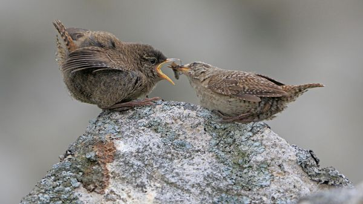

Jul 09, 2026 06:30 AM

Animals living on islands can develop strange characteristics. (Just look at the British.) Isolated, safe from mainland predators and facing less competition for resources, island-dwellers often evolve differently from mainland relatives. Some develop “island syndromes”. For example, small animals get bigger and big animals get smaller. The dodo of Mauritius evolved from the size of a pigeon to that of a large turkey, losing the use of its wings along the way.
Some wrens in Scotland have developed the syndrome. Cut off from mainland Britain for thousands of years, two subspecies on St Kilda and Shetland, a pair of archipelagoes, have evolved to be much larger than mainland wrens, says a recent paper in the Evolutionary Journal of the Linnean Society.
Researchers set mist nets beside speakers playing recordings of wren song across Shetland, Fair Isle, the Outer Hebrides and St Kilda—a method to lure birds out of cover. “Catching them was a nightmare,” says Michal Jezierski, the paper’s lead author. Wrens are so territorial that when song played, the birds simply sang back, refusing to budge. Still, the team caught 45 wrens, enough to study systematically. Using data of historical specimens from the National Museums Scotland, and body-mass records from the British Trust for Ornithology, they compared the island wrens with their mainland relatives—and with 695 other island-mainland bird pairs.
Fair Isle wrens were a similar size to mainland ones, and those on the Outer Hebrides were a tad larger. But St Kilda and Shetland wrens were gigantic: the largest was twice as heavy as the smallest mainland wren. They are in the top 25% most extreme cases of “island gigantism” recorded, much like New Zealand’s kakapo, the world’s heaviest parrot. They also had distinctive songs.
Only a small share of the genes that govern size overlapped in the two bird populations, despite them being similarly large. This suggests they evolved in parallel, via different genetic paths. It is still unclear why island animals become giants (or dwarfs). But Scottish wrens provide a piece of the puzzle. ■
For more expert analysis of the biggest stories in Britain, sign up to Blighty, our weekly subscriber-only newsletter.